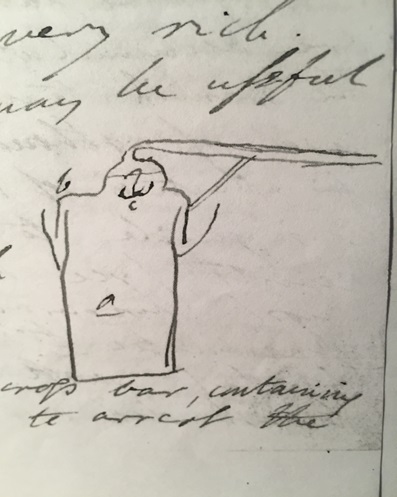

Thomas Beddoes to James Watt Jr, 12 December 1794
Dear Sir
The 200 copies on better paper (if Bristol affords it) of the first 2 plates will be done next week. The Digitalis has a second time emptied Mr Gladwell & he will have the apparatus just in the nick of time – Mr Tobin breathes 6 of his cylinders (2 c.H ) every day with an equal qty of atmc air – no effect, but difficulty in staunching the blood when he cuts himself in shaving; & as I think manifest increase of irritability of the iris – but no amendment of sight Below you have the extract from Dr Thornton’s letter – Some expressions in his letters might bear the interpretation of a wish to monopolize the pneumatic practice in London; & I am afraid your information points the same way. I wish you cd see these letters – He has subscribed 10 guineas – Facts are accumulating in our favour – Mr Townshend – the Spanish traveller – has given a very distinct case of asthma, croup –melancholia & affection of the stomach
A tin vessel <of 5 or 6 gallons> with a rim Round for a groove to receive water – chalk balls, water & oil of vitriol boiled together, are used for the effervescence – b. capital with long pipe. a. little vessel hung on a cross bar, containing mild or caustic volatile alkali to arrest the fumes of vitl acid – I just receive a letter from Mr Forman, which puts me in an awkward predicament. I have given Mr Gladwell the invoice of Ld Daer’s apparatus. He has put only 10 pounds into my hands. This large apparatus will cost 14 guineas at least, carriage & all. I cannot explain the matter to him in a satisfactory way; & what makes the business still more awkward is that your invoice is in Mr Gladwell’s name & this in mine – some alteration must be made – at least, an invoice shdbe sent to Mr Gladwell & some explanation of the charge given.
I even doubt whether he will pay me the surplus. Were it possible, i.e. were the boxes not yet forwarded, I think the 2 fire-pots – capital one & the 4 succeeding articles shd be taken out, which wd bring the charge nearer the former – Mr Gl. is rich but excessively avaricious – Such an embarrassment will not happen again – I wish too the apparatus to be directed to Mr Gl. No. 8 Parade Dowry Square (as I believe I mentioned in my first letter) for 2 reasons 1. that he may pay the carriage: 2 because it will make double trouble in the carriage for Bristol. This will make you rage agt the Douglasses. This unexpected affair hardly leaves room for Dr Thornton – who says as follows.
‘The first intimation I had of the importance of oxygen air for the removal of gutta serena was in a lady, who was a patient of mine for a nervous head-ach. By accident, she took up at church a prayer-book & was surprised to find her eye sight so strengthened that she cd read in it, when before so small a print was perfect confusion. Having mentioned this, I was anxious for the trial in the worst case of defective energy of ye optic nerve. The 1st patient Mr Hill’ (a surgeon) tried the air with, was the sister of Ld Walpole. She early lost one eye, though the defect cd not be discovered by a bye-stander – & the sight of the other had become very feeble. Electy was conjoined with the vital air. She cd not discern, as she told Mr Walton, the dial-plate belonging to the Horse Guards clock, but before she left him she cd readily perceive both the hour & minute hands. I gave you the acct of benefit received in gutta serena by a poor patient, who contented with a moderate sight, left off attending.... A lad was 7 weeks in St Thomas’s Hospital & turned out incurable. Mr Wathen, having no success in such a desperate case sent him to inhale the vital air. In 9 days he said he had a glimmering of sight & in 15 discerned objects whether luminous or not. To day he sees very well – The factor whose crystalline lens was rendered opaque by the sea-scurvy is coming forward in a surprising manner. He has now not a blotch & he gets florid. Mr Sharp expressed his astonishment at ye cure. At the same time Mr Hill showed him a lady, who had had an open ulcer of ye leg for 18 years – 27 months she had been under him (Mr S) & 4 under Pott, neither of whom cd prevent it But in 3 weeks (as you see Mr Sharp) Mr Hill has healed up the ulcer by giving her the oxygen air to inhale. It produced such an effect on his mind that he desired Mr Hill to attend his sister’ –
Extracts from Dr Thornton’s letter of Novr 15th 1794 to Dr Beddoes
Address: Mr J. Watt / Mr Boulton’s / Soho / Birmingham
Endorsement: Dr Beddoes / Decr 12 1794
MS: LoB MS 3219/4/27/08